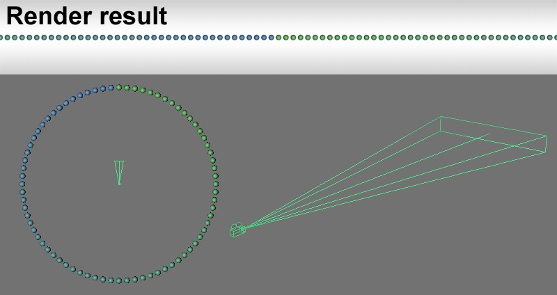

Function available in CINEMA 4D Prime, Visualize, Broadcast, Studio & BodyPaint 3D
柱面镜头
基本柱面镜头
柱面镜头有什么用？每一个数字绘景画家会很高兴可以使用这个额外的工具进行工作。
例如，建模部门给你发了一个粗模场景，你不得不进行数字绘景。使用柱面镜头渲染这个场景，然后绘制你的风景。你可以使用摄像机映射来对图像进行圆柱形投影，这样摄像机可以得到比其他投射类型的摄像机更大的区域。
示例

按如下方法创建一个360°渲染：
- 将摄像机放置到场景的中心，视野的角度必须完全平行与地面（R.P 和 R.B. = 0）
- 在渲染设置中，将宽度设置为相较于高度更大的数值（上例中被设置为1500*200像素）
- 在柱面镜头中，设置水平视野为360°，将垂直尺寸设置为一个很高的值（在上例中它被设置为700）。你需要进行一点试验来得到没有变形的渲染效果。